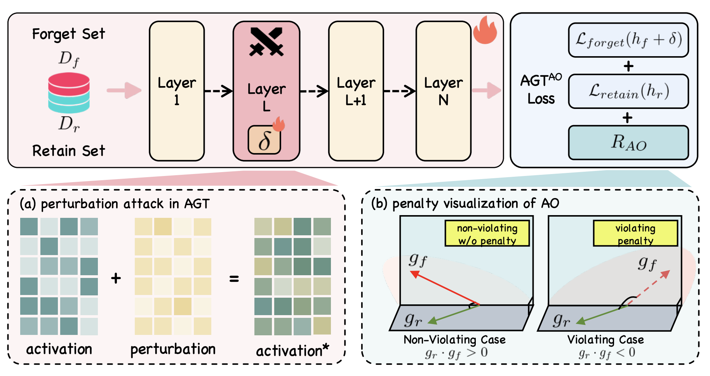

Worked on data and training optimization for Seed-Omni, spanning continued pre-training and mid-training across speech, text, and vision. Built a three-stage data-governance pipeline combining rule-based filtering, LLM-assisted review, and modality validation, together with sample- and token-level diagnostics for tracing loss spikes, data conflicts, and capability regressions. Developed reusable production and synthesis pipelines for dialect speech, VS2T, audio captioning and QA, SpeechQA, and long-form interleaved data, improving key workflows by up to 50×. Took end-to-end ownership of a 12B/128K, 463B-token mid-training run—from data recipe and training configuration through monitoring, checkpoint selection, evaluation, and regression attribution—and distilled the findings into reusable team practices.
